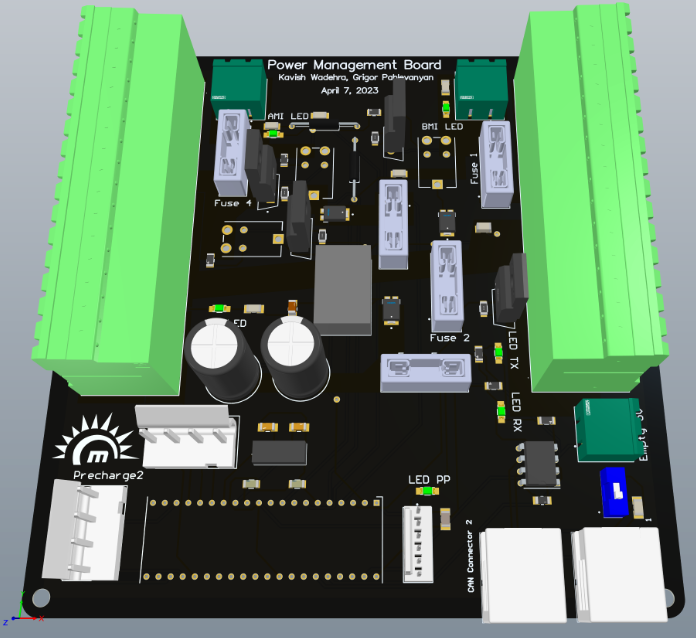
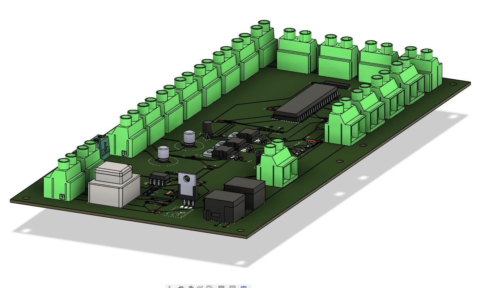

The power management system (PMS) of the vehicle is designed to be seamlessly
integrated with the high-voltage (HV) architecture of the vehicle.
The PMS serves the purpose of distributing power to all the low voltage
components of the vehicle from two sources, which are the supplementary
12V battery and the main battery's power from the DCDC buck converter. In order
to ensure that the designs are up to regulation standards, the PMS is designed
to work in compliance with circuit isolation. The PMS is separated into three
components: BMI, ATI, and AMI, which are responsible for supporting battery main
items, auxiliary temporary items, and auxiliary main items respectively.
The propulsionary power supporting components are on the BMI side, while
components that switch power supplies are on the ATI side. The AMI side is
reserved for auxiliary components such as the horn or powering switches/contactors.
The power distribution, start-up, shut down, and emergency stop to the entire vehicle
are all controlled by the MCU, PIC18F46K80.

Boards Powered
Data Acquisition
Collects data from CANBUS communications.
Driver Display
Shows driver important alerts as per regulations.
Low Voltage Board
Powers the lights on the vehicle.
Latching circuit
Enables startup when push button is pressed.
Precharge
Safe power transfer to the motor controller.
BMS
Monitors battery health and safety.
Original Design
When I first joined the team, the design was already in place, and I only made slight modifications.
However, the design had several issues such as incorrect component placement, no polygon pours,
and incorrect trace thicknesses. Additionally, it did not account for power blips when
transferring power sources, start-up and shut down behavior. It was designed using the
autoroute rather than manual routing. Due to these issues, Grigor and I had to completely
redesign the board and we had to step up to ensure the
board was up to standard.

PCB Design
Design Considerations
To minimize the cost of the board, standard 1-ounce copper fills were utilized rather
than 2 fills. A two-layer board was chosen to simplify and minimize the cost of the
board. Polygon pours were also utilized to optimize power delivery to each component.
Component placement on the PCB was condensed to ensure that it is thermally efficient
, and heatsinks were added to important components such as MOSFETS.
Components were also chosen to have around 1.5 times higher thermal and electrical
characteristics than the expected requirements to ensure reliable operation.
Note that majority of these design considerations were performed from the several high voltage architecture redesigns.